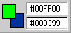

Using Director > Sprites > Changing the appearance of sprites > Changing the color of a sprite
Using Director > Sprites > Changing the appearance of sprites > Changing the color of a sprite |
Changing the color of a sprite
You can tint or color sprites by choosing new foreground and background colors from the Property Inspector or with Lingo. Choosing a new foreground color changes black pixels within the sprite to the selected color and blends dark colors with the new color. Choosing a new background color changes white pixels within the sprite to the selected color and blends light colors with the new color.
Director can animate foreground and background color changes in sprites, shifting gradually between the colors you specify in the start and end frames of a sprite. See Tweening other sprite properties.
To reverse the colors of an image, change the foreground color to white and the background color to black.
To change the color of a sprite:
1 |
Select a sprite. |
2 |
Do one of the following: |
Choose colors from the Foreground and Background color boxes in the Sprite tab of the Property Inspector.
 |
|
Enter RGB values (hexadecimal) or palette index values (0-255) for the foreground and background colors in the Sprite tab of the Property Inspector. |
|
To change the color of a sprite with Lingo, set the appropriate sprite property:
The |
|
The |